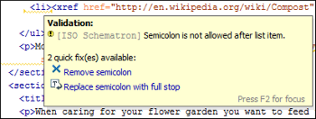
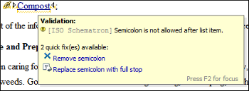
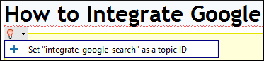
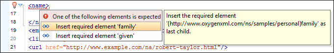

XML Quick Fixes
The Oxygen XML Editor Quick Fix support helps you resolve errors that appear in an XML document by offering Quick Fixes to problems such as missing required attributes or invalid elements. Quick Fixes are available in Text mode and Author mode
-
When hovering over the error or warning, the proposals may be presented in a tooltip pop-up window and the available quick Quick Fixes include a link that can be used to perform the fix.
Figure 1. Quick Fix Presented in a Tooltip in Text Mode Figure 2. Quick Fix Presented in a Tooltip in Author Mode  -
When hovering over the error or warning in Author mode, a small Quick Fix drop-down menu is presented. You can use the drop-down menu to display a list of available Quick Fixes to select from for the particular error or warning.
Figure 3. Quick Fix Drop-Down Menu in Author Mode  -
If you place the cursor in the highlighted area where a validation error or warning occurs, a Quick Fix icon () is displayed in the stripe on the left side of the editor. If you click this icon, Oxygen XML Editor displays the list of available fixes.
Figure 4. Quick Fix Menu Invoked by Clicking on the Icon  - With the cursor placed in the highlighted area of the error or warning, you can also invoke the Quick Fix menu by pressing Alt + 1 (Command + Alt + 1 on OS X) on your keyboard.
Whenever you make a modification in the XML document or you apply a fix, the list of Quick Fixes is recomputed to ensure that you always have valid proposals.